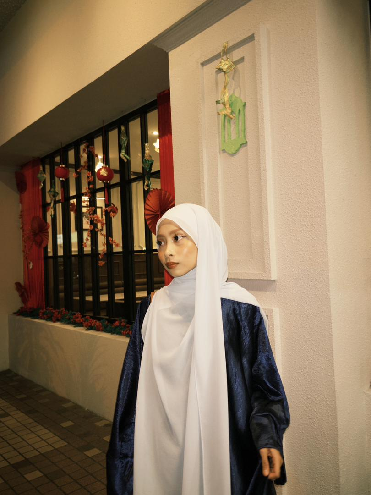
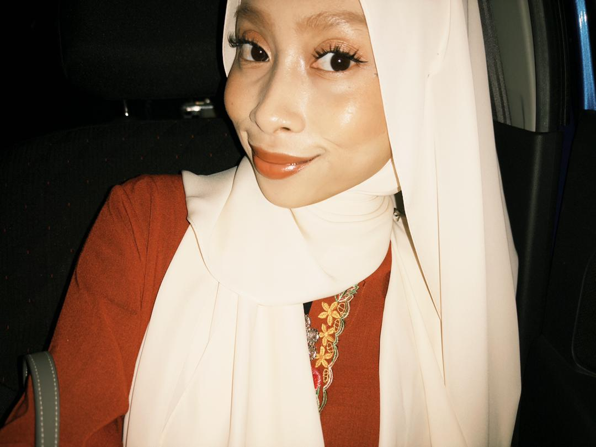
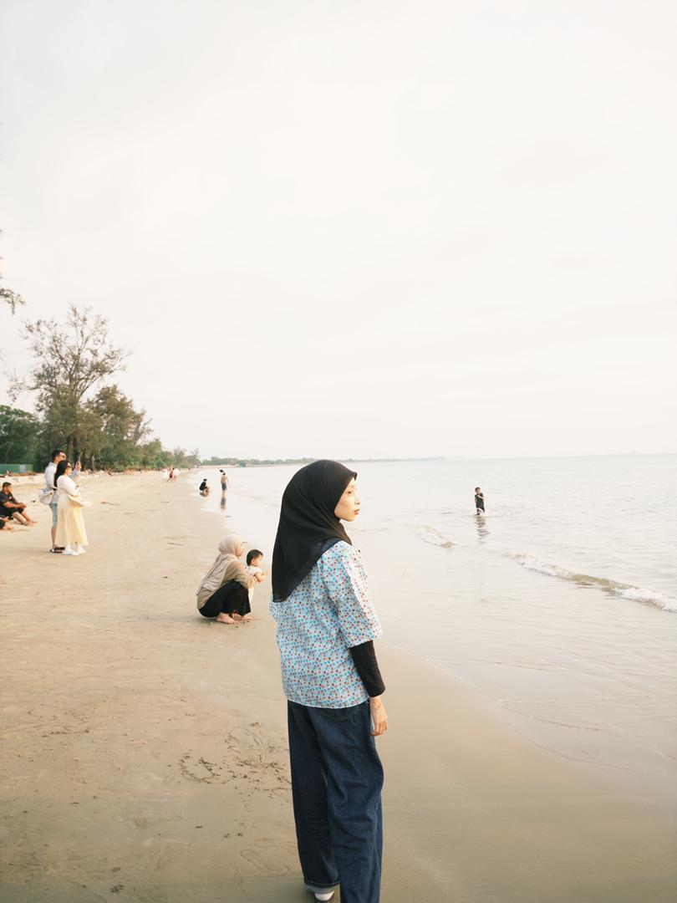
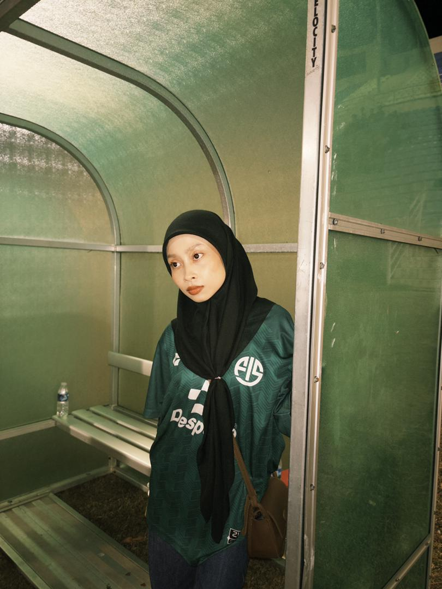
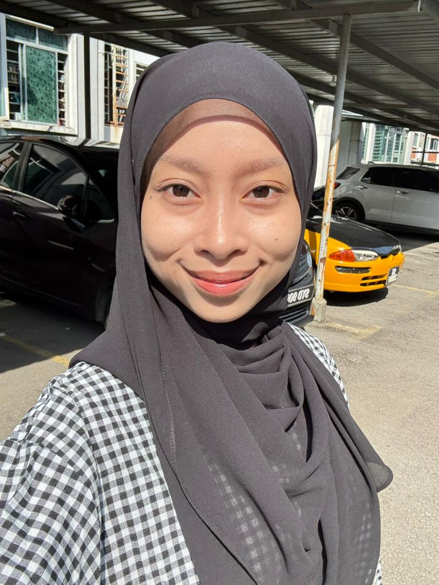
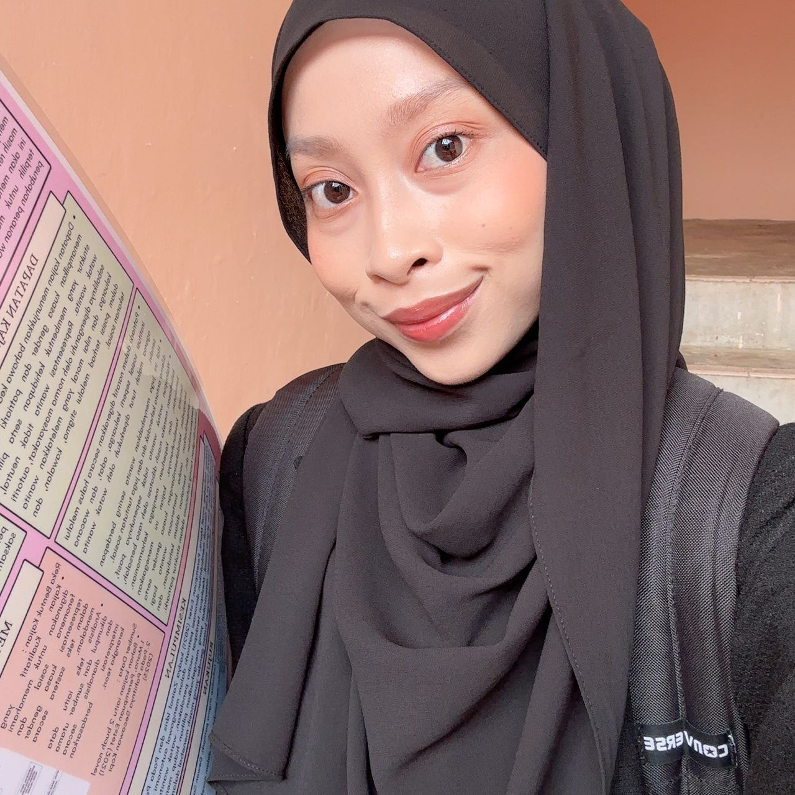
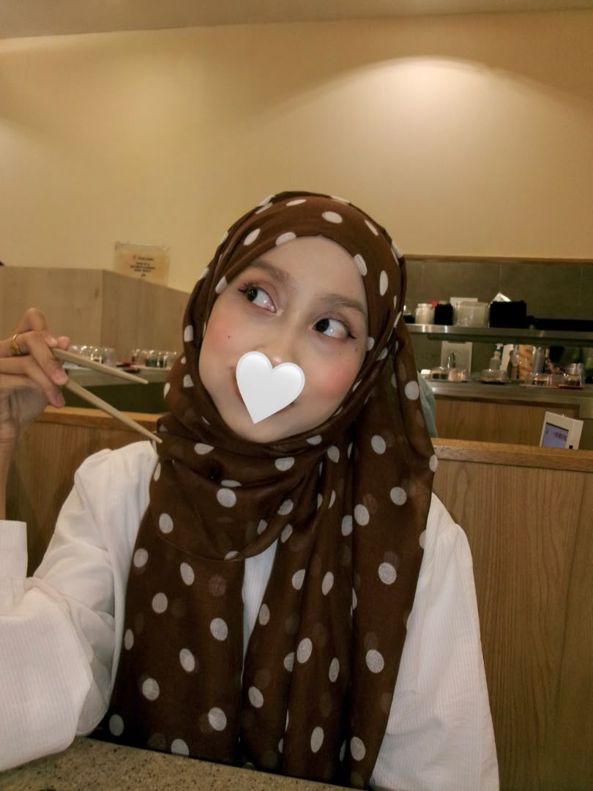

Happy Birthday
Nurul Ayuni
✨ Special Day ✨



tekan tu sampul u




Princess 👑

Paling Cantik ✨

di Bumi dan Bimasakti 🌌

...

...

...

...

...

...

...

Teruntuk Ayuni,
Wanita kecil dengan Impian yang besar - tak mudah terkalahkan dengan riuhnya bumi,
Di sela waktu 4 bola mata bertemu,
Dengan nama yang salah sebagai sapaan,
Tak disangka menjadi awal dari sebuah cerita,
Maka bermusimlah berlalu,
memisahkan jejak langkah,
membawa kita layar ke haluan berbeza,
Hingga takdir kembali menemukan,
Di bumi yang berbukit, di perkarangan yang luas terbentang,
Saat berselisih di laluan,
Pandangan bertaut semula, menghidupkan bara yang belum padam.
Lalu kujejak bayangmu di ruang maya, menyapa khabar di balik layar,
Dari bicara ringkas, terlerai sebuah teka-teki angka,
Berbahas kita tentang makna di sebalik 143,
angka sederhana yang menjadi rasa kasih,
Maka bermulalah episod kita meredah malam-malam yang dingin,
Dengan sebungkus burger di tangan sebagai tanda ingatan,
menyusuri jalan gelap demi melihat senyuman,
Walau ada kalanya badai kecil melanda,
Selisih faham dan rajuk mewarnai perjalanan,
Kini, di saat hari terus berganti,
Dalam setiap riuh rendah dunia yang cuba menguji,
Jangan segan untuk berlabuh kemari.


